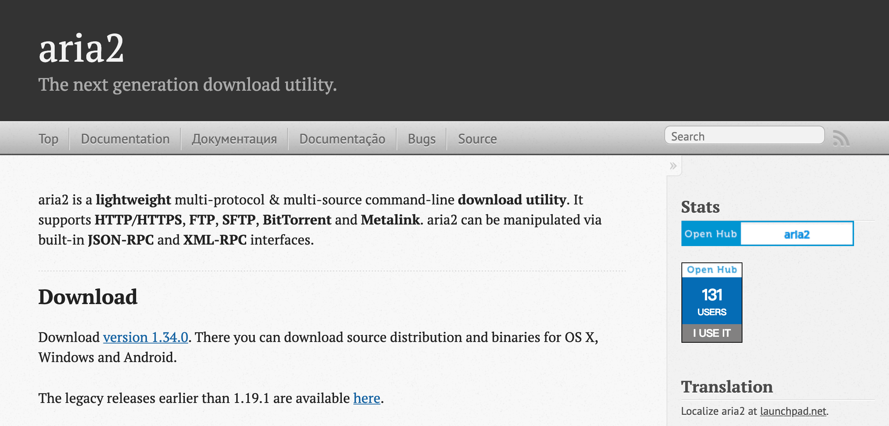

aria2是一款轻量且高效的命令行下载工具。

1. 介绍说明
轻量、高效、命令行
aria2 是一款轻量且高效命令行下载工具，它提供了对多协议和多源地址的支持，并尝试将下载带宽利用率最大化，目前支持的协议包括HTTP(S)、FTP、BitTorrent(DHT, PEX, MSE/PE) 和 Metalink。通过 Metalink 的分块检查，aria2 可以在下载过程中自动的进行数据校验。
虽然现在有诸如 wget 和 curl 等其他类似产品，但 aria2 具有两个独特的功能，那就是可以并发的进行对多协议下载的支持和多个源地址的下载。这样用户将不必等待单个文件的下载完成，而且 aria2 会尽可能快的下载。
# Ubuntu
$ sudo apt-get install aria2
# CentOS
$ sudo yum install aria2除 aria2 外，也有一些可以进行分片下载的工具，它们往往按照线程数分割文件，之后再并行下载。这就意味着，它们不会对未完成的部分进行自适应性重新分片。当整个流程工作正常时，这个策略是可行的；但一旦存在一个线程运行非常慢时，这样整个进程就需要等待该线程执行完成。而 aria2 就可以很好的处理这个情况，它将文件分割成 1M 大小的分片，当某个线程运行特别缓慢时，使用更快的线程来替换它进行下载。总之，aria2 是非常智能和可靠的。
当源地址存在诸如 & 或 * 等其他特殊字符时，请使用单引号或者双引号将 URL 包含起来。另外，如果你忘记了这些参数的全名或者含义，把 -h 放在选项或者词的前面，这样 aria2 就会搜索相关的选项并把他的帮助打印出来。
~ » aria2c -hconnection
Usage: aria2c [OPTIONS] [URI | MAGNET | TORRENT_FILE | METALINK_FILE]...
Printing options whose name includes 'connection'.
Options:
-x, --max-connection-per-server=NUM The maximum number of connections to one
server for each download.
Possible Values: 1-16
Default: 1
Tags: #basic, #http, #ftp
--ftp-reuse-connection[=true|false] Reuse connection in FTP.
Possible Values: true, false
Default: true
Tags: #ftp
Refer to man page for more information.2. 简单使用
官方文档地址：点击即可
- 1. 下载单个文件
$ aria2c "https://escapelife.github.io/"
02/18 15:40:03 [NOTICE] Downloading 1 item(s)
[#e5cd7f 16KiB/46KiB(34%) CN:1 DL:17KiB ETA:1s]
02/18 15:40:06 [NOTICE] Download complete: /Users/escape/MissSun/py3neovim/index.html
Download Results:
gid |stat|avg speed |path/URI
======+====+===========+=======================================================
e5cd7f|OK | 26KiB/s|/Users/escape/MissSun/py3neovim/index.html
Status Legend:
(OK):download completed.- 2. 下载多个文件(
-Z)
$ aria2c -Z "https://escapelife.github.io/" "https://escapelife.github.io/"
Download Results:
gid |stat|avg speed |path/URI
======+====+===========+=======================================================
4d0d71|OK | 128KiB/s|/Users/escape/MissSun/py3neovim/index.html
ea8d19|OK | 45KiB/s|/Users/escape/MissSun/py3neovim/index.1.html- 3. 扩展下载地址(
-P)
$ aria2c -Z -P "https://escapelife.github.io/image{1,2,3}_{A,B,C}.png"- 4. 指定文保存名称(
-o)
$ aria2c -o index.html "https://escapelife.github.io/"- 5. 断电续传(
-c)
$ aria2c -c "https://escapelife.github.io/"- 6. 分段下载(
-x)
$ aria2c -x 8 "https://escapelife.github.io/"- 7. 设置下载文件的最大并行进程数(
-s)
$ aria2c -s 8 "https://escapelife.github.io/"- 8. 设置下载项目的最大并行下载数(
-j)
$ aria2c -Z -j 8 "https://escapelife.github.io/" "https://escapelife.github.io/"- 9. 从文件获取输入下载地址(
-i)
$ aria2c -i download_movies_list.txt- 10. 下载到指定文件夹下(
-d)
$ aria2c -d /home/escape "https://escapelife.github.io/"- 11. 下载速度限制(
--max-download-limit)
$ aria2c --max-download-limit=500k "https://escapelife.github.io/"3. 高级操作
参考文档地址：点击即可
- 1. 下载 BitTorrent 种子文件
$ aria2c "https://escapelife.github.io/Dragon.torrent"- 2. 下载 BitTorrent 磁力链接
$ aria2c "magnet:?xt=urn:btih:248D0A1CD082XXXXX8D5C717D8C"- 3. 列出磁力链地址的下载内容(
-S)
$ aria2c -S "https://escapelife.github.io/Dragon.torrent"- 4. 指定索引来下载磁力链文件内容(
--select-file=<INDEX>...)
$ aria2c --select-file=1,3 "https://escapelife.github.io/Dragon.torrent"
$ aria2c --select-file=1-3,5 "https://escapelife.github.io/Dragon.torrent"4. 配置文件
需要对软件进行定制化的话，就需要进行适合自己的配置了。
##########################################################################
# 等号后面内容为默认设置，如为空则无默认设置，请自行选取需要更改的添加到你的配置文件中 #
##########################################################################
# 下载路径
dir=
# 日志文件的路径
# 如果设置为 "-", 日志则写入到 stdout; 如果设置为空字符串(""), 日志将不会记录到磁盘上
log=
# 最大同时下载数
max-concurrent-downloads=5
# 检查完整性
# 通过对文件的每个分块或整个文件进行哈希验证来检查文件的完整性
# 此选项仅对BT、Metalink及设置了--checksum选项的HTTP(S)/FTP链接生效
check-integrity=false
# 断点续传, 继续下载部分完成的文件
# 启用此选项可以继续下载从浏览器或其他程序按顺序下载的文件; 目前只支持HTTP(S)/FTP下载的文件
continue=true
# 设置所有协议的代理服务器地址
# 如果覆盖之前设置的代理服务器, 使用""即可
# 您还可以针对特定的协议覆盖此选项, 即使用--http-proxy/--https-proxy和--ftp-proxy选项
# 此设置将会影响所有下载, 代理服务器地址的格式为[http://][USER:PASSWORD@]HOST[:PORT]
all-proxy=
# 代理服务器用户名
all-proxy-user=
# 代理服务器密码
all-proxy-passwd=
# 连接超时时间, 设置建立HTTP/FTP/代理服务器连接的超时时间(秒)
# 当连接建立后, 此选项不再生效, 请使用--timeout选项
connect-timeout=60
# 模拟运行
# 如果设置为"是", aria2将仅检查远程文件是否存在而不会下载文件内容
# 此选项仅对HTTP/FTP下载生效; 如果设置为true的话, BT下载将会直接取消
dry-run=false
# 最小速度限制
# 当下载速度低于此选项设置的值(B/s)时将会关闭连接, 0表示不设置最小速度限制
# 您可以增加数值的单位K或M(1K = 1024, 1M = 1024K), 此选项不会影响BT下载
lowest-speed-limit=0
# 单服务器最大连接数
max-connection-per-server=1
# 找到重试次数, 设置为0将会禁用此选项
# 如果aria2从远程HTTP/FTP服务器收到"文件未找到"的状态超过此选项设置的次数后下载将会失败
# 此选项仅影响HTTP/FTP服务器; 重试时同时会记录重试次数, 所以也需要设置--max-tries这个选项
max-file-not-found=0
# 最大尝试次数
# 设置最大尝试次数, 0表示不限制
max-tries=5
# 最小文件分片大小, 可以设置的值为:1M-1024M
min-split-size=20M
# .netrc 文件路径
netrc-path=$(HOME)/.netrc
# 禁用 netrc
no-netrc=false
# 不使用代理服务器列表
# 设置不使用代理服务器的主机名/域名, 包含或不包含子网掩码的网络地址, 多个使用逗号分隔
no-proxy=
# 文件名
# 下载文件的文件名; 其总是相对于--dir选项中设置的路径, 当使用--force-sequential参数时此选项无效
out=
# 代理服务器请求方法
# 设置用来请求代理服务器的方法; 方法可设置为GET或TUNNEL; HTTPS下载将忽略此选项并总是使用TUNNEL
proxy-method=get
# 获取服务器文件时间
# 从HTTP/FTP服务获取远程文件的时间戳, 如果可用将设置到本地文件
remote-time=false
# URI复用
# 当所有给定的URI地址都已使用, 继续使用已经使用过的URI地址
reuse-uri=true
# 重试等待时间
# 设置重试间隔时间(秒); 当此选项的值大于0时, aria2在HTTP服务器返回503响应时将会重试
retry-wait=0
# 服务器状态保存文件
# 指定用来保存服务器状态的文件名, 您可以使用--server-stat-if参数读取保存的数据
server-stat-of=
# 服务器状态超时
# 指定服务器状态的过期时间(单位为秒)
server-stat-timeout=86400
# 单任务连接数
# 下载时使用N个连接, 如果提供超过N个URI地址, 则使用前N个地址, 剩余的地址将作为备用
# 如果提供的URI地址不足N个, 这些地址多次使用以保证同时建立N个连接
# 同一服务器的连接数会被--max-connection-per-server选项限制
split=5
# 指定HTTP/FTP下载使用的分片选择算法
# 分片表示的是并行下载时固定长度的分隔段, 如果设置为"默认", aria2将会按减少建立连接数选择分片
# 由于建立连接操作的成本较高, 因此这是合理的默认行为; 如果设置为"顺序", aria2将选择索引最小的分片
# 索引为0时表示为文件的第一个分片, 这将有助于视频的边下边播. --enable-http-pipelining 选项有助于减少重连接的开销
# 请注意, aria2依赖于--min-split-size选项, 所以有必要对--min-split-size选项设置一个合理的值
# 如果设置为"随机", aria2将随机选择一个分片. 就像"顺序"一样, 依赖于--min-split-size选项
# 如果设置为"几何", aria2会先选择索引最小的分片, 然后会为之前选择的分片保留指数增长的空间
# 这将减少建立连接的次数, 同时文件开始部分将会先行下载. 这也有助于视频的边下边播
stream-piece-selector=default
# 超时时间
timeout=60
# 指定URI选择的算法
# 可选的值包括 "按顺序", "反馈" 和 "自适应"
# 如果设置为"按顺序", URI将按列表中出现的顺序使用
# 如果设置为"反馈", aria2将根据之前的下载速度选择URI列表中下载速度最快的服务器, 同时也将有效跳过无效镜像
# 之前统计的下载速度将作为服务器状态文件的一部分, 参见--server-stat-of和--server-stat-if选项
# 如果设置为"自适应", 将从最好的镜像和保留的连接里选择一项
uri-selector=feedback
# 检查证书
check-certificate=true
# 支持GZip
# 如果远程服务器的响应头中包含Content-Encoding:gzip或Content-Encoding:deflate
# 将发送包含 Accept: deflate, gzip 的请求头并解压缩响应
http-accept-gzip=false
# 认证质询
# 仅当服务器需要时才发送HTTP认证请求头. 如果设置为"否", 每次都会发送认证请求头
# 例外: 如果用户名和密码包含在URI中, 将忽略此选项并且每次都会发送认证请求头
http-auth-challenge=false
# 禁用缓存
# 发送的请求头中将包含Cache-Control:no-cache和Pragma:no-cache header以避免内容被缓存
# 如果设置为"否", 上述请求头将不会发送, 同时您也可以使用--header选项将Cache-Control请求头添加进去
http-no-cache=false
# HTTP默认用户名
http-user=
# HTTP默认密码
http-passwd=
# HTTP代理服务器
http-proxy=
# HTTP代理服务器用户名
http-proxy-user=
# HTTP代理服务器密码
http-proxy-passwd=
# HTTPS代理服务器
https-proxy=
# HTTPS代理服务器用户名
https-proxy-user=
# HTTPS代理服务器密码
https-proxy-passwd=
# 设置HTTP请求来源(Referer)
# 此选项将影响所有HTTP/HTTPS下载, 如果设置为*, 请求来源将设置为下载链接
# 此选项可以配合--parameterized-uri选项使用
referer=
# 启用持久连接
# 启用HTTP/1.1持久连接
enable-http-keep-alive=true
# 启用HTTP管线化
# 启用HTTP/1.1管线化
enable-http-pipelining=false
# 自定义请求头
# 增加HTTP请求头内容
header=
# Cookies保存路径
# 以Mozilla/Firefox(1.x/2.x)/Netscape格式将Cookies保存到文件中
# 如果文件已经存在将被覆盖, 会话过期的Cookies也将会保存, 其过期时间将会设置为0
save-cookies=
# 启用HEAD方法
# 第一次请求HTTP服务器时使用HEAD方法
use-head=false
# 自定义User Agent
user-agent=aria2/$VERSION
# FTP默认用户名
ftp-user=anonymous
# FTP默认密码
# 如果URI中包含用户名单不包含密码, aria2首先会从.netrc文件中获取密码
# 如果在.netrc文件中找到密码, 则使用该密码; 否则, 使用此选项设置的密码
ftp-passwd=ARIA2USER@
# 在FTP中使用被动模式
# 如果设置为"否", 则使用主动模式, 此选项不适用于SFTP传输
ftp-pasv=true
# FTP代理服务器
ftp-proxy=
# FTP代理服务器用户名
ftp-proxy-user=
# FTP代理服务器密码
ftp-proxy-passwd=
# 传输类型
ftp-type=binary
# 连接复用
ftp-reuse-connection=true
# 设置SSH主机公钥的校验和
# TYPE为哈希类型, 支持的哈希类型为sha-1和md5; DIGEST是十六进制摘要
# 例如: sha-1=b030503d4de4539dc7885e6f0f5e256704edf4c3
# 此选项可以在使用SFTP时用来验证服务器的公钥; 如果此选项不设置, 即保留默认, 不会进行任何验证
ssh-host-key-md=
# 分离仅做种任务
# 统计当前活动下载任务(参见-j选项) 时排除仅做种的任务
# 这意味着, 如果参数设置为-j3时, 此选项打开并且当前有3个正在活动的任务, 并且其中有1个进入做种模式
# 那么其会从正在下载的数量中排除(即数量会变为2), 在队列中等待的下一个任务将会开始执行.
# 但要知道, 在RPC方法中, 做种的任务仍然被认为是活动的下载任务.
bt-detach-seed-only=false
# 启用哈希检查完成事件
# 允许BT下载哈希检查(参见-V选项) 完成后调用命令
# 默认情况下, 当哈希检查成功后, 通过--on-bt-download-complete设置的命令将会被执行
# 如果要禁用此行为, 请设置为"否"
bt-enable-hook-after-hash-check=true
# 启用本地节点发现(LPD)
bt-enable-lpd=false
# BT排除服务器地址
# 逗号分隔的BT排除服务器地址, 您可以使用*匹配所有地址, 因此将排除所有服务器地址
# 当在shell命令行使用*时, 需要使用转义符或引号
bt-exclude-tracker=
# 外部IP地址
# 指定用在BitTorrent下载和DHT中的外部IP地址, 它可能被发送到BitTorrent服务器
# 对于DHT, 此选项将会报告本地节点正在下载特定的种子, 这对于在私有网络中使用DHT非常关键
# 虽然这个方法叫外部, 但其可以接受各种类型的IP地址
bt-external-ip=
# 强制加密
# BT消息中的内容需要使用arc4加密
# 此选项是设置--bt-require-crypto/--bt-min-crypto-level=arc4这两个选项的快捷方式
# 此选项不会修改上述两个选项的内容; 如果设置为"是", 将拒绝以前的BT握手, 并仅使用模糊握手及加密消息
bt-force-encryption=false
# 做种前检查文件哈希
# 如果设置为"是", 当使用--check-integrity选项完成哈希检查及文件完成后才继续做种
# 如果您希望仅当文件损坏或未完成时检查文件, 请设置为"否". 此选项仅对BT下载有效
bt-hash-check-seed=true
# 加载已保存的元数据文件
# 使用磁链下载时, 在从DHT获取种子元数据之前, 首先尝试加载--bt-save-metadata选项保存的文件
# 如果文件加载成功, 则不会从DHT下载元数据
bt-load-saved-metadata=false
# 最多打开文件数
# 设置BT/Metalink下载全局打开的最大文件数
bt-max-open-files=100
# 最大连接节点数
# 设置每个BT下载的最大连接节点数, 0表示不限制
bt-max-peers=55
# 仅下载种子文件
# 仅下载种子文件, 种子文件中描述的文件将不会下载, 此选项仅对磁链生效
bt-metadata-only=false
# 设置加密方法的最小级别
# 如果节点提供多种加密方法, aria2 将选择满足给定级别的最低级别.
bt-min-crypto-level=plain
# 优先下载
# 尝试先下载每个文件开头或结尾的分片, 此选项有助于预览文件
# 参数可以包括两个关键词:head和tail, 如果包含两个关键词, 需要使用逗号分隔
# 每个关键词可以包含一个参数, SIZE; 如指定head=SIZE, 每个文件的最前SIZE数据将会获得更高的优先级
# tail=SIZE表示每个文件的最后SIZE数据, SIZE可以包含K或M(1K = 1024, 1M = 1024K)
bt-prioritize-piece=
# 删除未选择的文件
# 当BT任务完成后删除未选择的文件, 要选择需要下载的文件, 请使用--select-file选项
# 如果没有选择, 则所有文件都默认为需要下载. 此选项会从磁盘上直接删除文件, 请谨慎使用此选项.
bt-remove-unselected-file=false
# 需要加密
# 如果设置为"是", 将不会接受以前的BitTorrent握手协议(\\19BitTorrent协议)并建立连接
# 因此aria2总是模糊握手
bt-require-crypto=false
# 期望下载速度
# 如果一个BT下载的整体下载速度低于此选项设置的值, aria2会临时提高连接数以提高下载速度
# 在某些情况下, 设置期望下载速度可以提高您的下载速度, 可以增加数值的单位K或M(1K = 1024, 1M = 1024K)
bt-request-peer-speed-limit=50K
# 保存种子文件
# 保存种子文件为".torrent"文件. 此选项仅对磁链生效
# 文件名为十六进制编码后的哈希值及 ".torrent"后缀
# 保存的目录与下载文件的目录相同. 如果相同的文件已存在, 种子文件将不会保存
bt-save-metadata=false
# 不检查之前下载文件中每个分片的哈希值
bt-seed-unverified=false
# 无速度时自动停止时间
# 当BT任务下载速度持续为0, 达到此选项设置的时间后停止下载; 如果设置为0, 此功能将禁用
bt-stop-timeout=0
# BT服务器地址
# 逗号分隔的BT服务器地址; 如果服务器地址在--bt-exclude-tracker选项中, 其将不会生效
bt-tracker=
# BT服务器连接超时时间
# 设置BT服务器的连接超时时间(秒); 当连接建立后, 此选项不再生效, 请使用--bt-tracker-timeout选项
bt-tracker-connect-timeout=60
# BT服务器连接间隔时间
# 设置请求BT服务器的间隔时间(秒); 此选项将完全覆盖服务器返回的最小间隔时间和间隔时间, aria2仅使用此选项的值
# 如果设置为0时, aria2将根据服务器的响应情况和下载进程决定时间间隔
bt-tracker-interval=0
# BT服务器超时时间
bt-tracker-timeout=60
# 修改 IPv4 DHT 路由表文件路径
dht-file-path=$HOME/.aria2/dht.dat
#修改 IPv6 DHT 路由表文件路径
dht-file-path6=$HOME/.aria2/dht6.dat
# DHT监听端口
# 设置DHT(IPv4,IPv6)和UDP服务器使用的UCP端口; 多个端口可以使用逗号","分隔, 例如:6881,6885
# 您还可以使用短横线"-"表示范围:6881-6999, 或可以一起使用:6881-6889,6999
dht-listen-port=6881-6999
# DHT消息超时时间
dht-message-timeout=10
# 启用DHT(IPv4)
# 启用IPv4 DHT功能. 此选项同时会启用UDP服务器支持
# 如果种子设置为私有, 即使此选项设置为"是", aria2也不会启用DHT
enable-dht=true
# 启用DHT(IPv6)
# 如果种子设置为私有, 即使此选项设置为"是", aria2也不会启用DHT
# 使用--dht-listen-port选项设置监听的端口
enable-dht6=
# 启用节点交换扩展
# 如果种子设置为私有, 即使此选项设置为"是", aria2也不会启用此功能
enable-peer-exchange=true
# 下载种子中的文件
follow-torrent=true
# 监听端口
listen-port=6881-6999
# 全局最大上传速度
# 设置全局最大上传速度(字节/秒), 0表示不限制; 您可以增加数值的单位K或M(1K = 1024, 1M = 1024K)
max-overall-upload-limit=0
# 最大上传速度
# 设置每个任务的最大上传速度(字节/秒), 0表示不限制; 您可以增加数值的单位K或M(1K = 1024, 1M = 1024K)
max-upload-limit=0
# 节点ID前缀
# BT中节点ID长度为20字节. 如果超过20字节, 将仅使用前20字节
# 如果少于20字节, 将在其后不足随机的数据保证为20字节
peer-id-prefix=A2-1-33-0-
# Peer Agent
# 指定BT扩展握手期间用于节点客户端版本的字符串.
peer-agent=aria2/1.33.0
# 最小分享率
# 指定分享率. 当分享率达到此选项设置的值时会完成做种. 强烈建议您将此选项设置为大于等于1.0
# 如果您想不限制分享比率, 可以设置为0.0; 如果同时设置了--seed-time选项, 当任意一个条件满足时将停止做种
seed-ratio=1.0
# 最小做种时间
# 此选项设置为0时, 将在BT任务下载完成后不进行做种
seed-time=
# 下载Metalink中的文件
follow-metalink=true
# 基础URI
metalink-base-uri=
# 语言
metalink-language=
# 首选服务器位置
# 首选服务器所在的位置, 可以使用逗号分隔的列表, 例如:jp,us.
metalink-location=
# 下载文件的操作系统
metalink-os=
# 下载文件的版本号
metalink-version=
# 指定首选使用的协议
# 可以设置为 http, https, ftp 或"无", 设置为"无"时禁用此选项
metalink-preferred-protocol=none
# 仅使用唯一协议
# 如果一个Metalink文件可用多种协议, 并且此选项设置为"是", aria2将只会使用其中一种
# 使用--metalink-preferred-protocol参数指定首选的协议
metalink-enable-unique-protocol=true
# 启用JSON-RPC/XML-RPC服务器
enable-rpc=false
# 种子文件下载完后暂停
pause-metadata=false
# 接受所有远程请求
rpc-allow-origin-all=false
# 在所有网卡上监听
# 在所有网络适配器上监听JSON-RPC/XML-RPC的请求, 如果设置为"否", 仅监听本地网络的请求
rpc-listen-all=false
# 监听端口
rpc-listen-port=6800
# 最大请求大小
# 设置JSON-RPC/XML-RPC最大的请求大小; 如果 aria2检测到请求超过设定的字节数, 会直接取消连接
rpc-max-request-size=2M
# 保存上传的种子文件
rpc-save-upload-metadata=true
# 启用SSL/TLS
rpc-secure=
# 允许覆盖
# 如果相应的控制文件不存在时从头重新下载文件, 参见--auto-file-renaming选项
allow-overwrite=false
# 允许分片大小变化
allow-piece-length-change=false
# 始终断点续传
always-resume=true
# 异步DNS
async-dns=true
# 文件自动重命名
# 重新命名已经存在的文件, 此选项仅对HTTP(S)/FTP下载有效
# 新的文件名后会在文件名后、扩展名(如果有)前追加句点和数字(1..9999)
auto-file-renaming=true
# 自动保存间隔
auto-save-interval=60
# 条件下载
conditional-get=false
# 配置文件路径
conf-path=$HOME/.aria2/aria2.conf
# 控制台日志级别
console-log-level=notice
# 使用UTF-8处理Content-Disposition
content-disposition-default-utf8=
# 启用后台进程
daemon=false
# 延迟加载
deferred-input=false
# 禁用IPv6
disable-ipv6=false
# 磁盘缓存
disk-cache=16M
# 下载结果
download-result=default
# DSCP
dscp=
# 最多打开的文件描述符
rlimit-nofile=
# 终端输出使用颜色
enable-color=true
# 启用MMap
# 内存中存放映射文件, 当文件空间没有预先分配至, 此选项无效, 参见--file-allocation
enable-mmap=false
# 事件轮询方法
event-poll=
# 文件分配方法
file-allocation=prealloc
# 强制保存
force-save=false
# 保存未找到的文件
# 当使用--save-session选项时, 即使当任务中的文件不存在时也保存该下载任务, 此选项同时会将这种情况保存到控制文件中
save-not-found=true
# 仅哈希检查
# 如果设置为"是", 哈希检查完使用--check-integrity选项, 根据是否下载完成决定是否终止下载
hash-check-only=false
# 控制台可读输出
# 在控制台输出可读格式的大小和速度(例如, 1.2Ki, 3.4Mi)
human-readable=true
# 保留未完成的任务
keep-unfinished-download-result=true
# 最多下载结果
max-download-result=1000
# MMap最大限制
max-mmap-limit=9223372036854775807
# 最大断点续传尝试次数
max-resume-failure-tries=0
# 指定启用的最低SSL/TLS版本
min-tls-version=TLSv1
# 日志级别
log-level=debug
# 根据可用带宽优化并发下载的数量
# aria2使用之前统计的下载速度通过规则N=A+BLog10(速度单位为 Mbps)得到并发下载的数量
# 其中系数A和B可以在参数中以冒号分隔自定义, 默认值(A=5,B=25)
# 可以在1Mbps网络上使用通常5个并发下载, 在100Mbps网络上为50个, 并发下载的数量保持在--max-concurrent-downloads参数定义的最大之下
optimize-concurrent-downloads=false
# 文件分片大小
# 设置HTTP/FTP下载的分配大小, aria2根据这个边界分割文件, 所有的分割都是这个长度的倍数
# 此选项不适用于BitTorrent下载, 如果Metalink文件中包含分片哈希的结果此选项也不适用
piece-length=1M
# 显示控制台输出
show-console-readout=true
# 下载摘要输出间隔
# 设置下载进度摘要的输出间隔(秒), 设置为0禁止输出
summary-interval=60
# 全局最大下载速度
# 设置全局最大下载速度(字节/秒). 0表示不限制; 您可以增加数值的单位K或M(1K = 1024, 1M = 1024K)
max-overall-download-limit=0
# 最大下载速度
# 设置每个任务的最大下载速度(字节/秒), 0表示不限制; 您可以增加数值的单位K或M(1K = 1024, 1M = 1024K)
max-download-limit=0
# 禁用配置文件
no-conf=
# 文件分配限制
# 不对比此参数设置大小小的分配文件; 您可以增加数值的单位K或M(1K = 1024, 1M = 1024K)
no-file-allocation-limit=5M
# 启用参数化URI支持
# 您可以指定部分的集合:http://{sv1,sv2,sv3}/foo.iso
# 同时您也可以使用步进计数器指定数字化的序列:http://host/image[000-100:2].img, 步进计数器可以省略
# 如果所有URI地址不指向同样的文件, 例如上述第二个示例, 需要使用-Z选项
parameterized-uri=false
# 禁用控制台输出
quiet=false
# 实时数据块验证
# 如果提供了数据块的校验和, 将在下载过程中通过校验和验证数据块
realtime-chunk-checksum=true
# 删除控制文件, 此选项将有助于使用不支持断点续传代理服务器的用户
# 在下载前删除控制文件, 使用 --allow-overwrite=true 选项时, 总是从头开始下载文件
remove-control-file=
# 状态保存文件
# 当退出时保存错误及未完成的任务到指定的文件中; 您可以在重启aria2时使用--input-file选项重新加载
# 如果您希望输出的内容使用GZip压缩, 您可以在文件名后增加.gz扩展名
# 通过aria2.addTorrent()和aria2.addMetalink()的RPC方法添加的下载,其元数据没有保存到文件的将不会保存
# 通过aria2.remove()和aria2.forceRemove()删除的下载将不会保存
save-session=
# 保存状态间隔
# 每隔此选项设置的时间(秒)后会保存错误或未完成的任务到--save-session选项指定的文件中
# 如果设置为0时, 仅当aria2退出时才会保存
save-session-interval=0
# Socket接收缓冲区大小
# 设置Socket接收缓冲区最大的字节数, 指定为0时将禁用此选项
# 当使用SO_RCVBUF选项调用setsockopt()时此选项的值将设置到Socket的文件描述符中
socket-recv-buffer-size=0
# 自动关闭时间
# 在此选项设置的时间(秒)后关闭应用; 如果设置为0, 此功能将禁用
stop=0
# 缩短控制台输出内容, 输出的内容在一行中
truncate-console-readout=true
# 部分事件hook
# BT下载完成(如有做种将包含做种，如需调用请务必确定设定完成做种条件)
on-bt-download-complete=
# 下载完成
on-download-complete=
# 下载错误
on-download-error=
# 下载暂停
on-download-pause=
# 下载开始
on-download-start=
# 下载停止
on-download-stop=